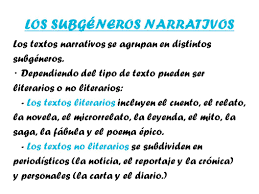

Algunos de los subgéneros más populares del cuento son:
Cuento fantástico.
Cuento de hadas.
Microrrelato.
Cuento de ciencia ficción.
Cuento policíaco.
Cuento tipo fábula.
Cuento de terror.
El folclorista Vladímir Propp, en su libro Morfología del cuento maravilloso desmontó la estructura del cuento oral en unidades estructurales constantes o funciones narrativas, con sus variantes, sistemas, fuentes y asuntos, etc. Además de eso, este autor aventura una posible cronología de este tipo de narraciones, cuya primera etapa estaría integrada por el cuento de inspiración mítico-religiosa, mientras que una segunda etapa constituiría el verdadero desarrollo del cuento.
La mayoría de los escritores y de los críticos literarios reconocen tres fases históricas en el género cuento: la fase oral, la primera fase escrita y la segunda fase escrita.
Fase oral
La primera fase en surgir fue la oral, la cual no es posible precisar cuando se inició. Es de presumir que el cuento se desarrolló en una época en la que ni siquiera existía la escritura, así que posiblemente las historias entonces eran narradas oralmente alrededor de fogatas, en tiempos de los pueblos primitivos, generalmente en las tardes y por las noches, al aire libre o en cuevas, para crear cohesión social mediante la narración de los orígenes del pueblo común y sus funciones. Presumiblemente por ello, la suspensión, lo mágico, lo maravilloso y fantástico fue lo que caracterizó a estas primeras creaciones de rango mítico, que pretendían explicar el mundo de una forma primitiva, aún alejada de la razón.
Fase escrita
La primera fase escrita probablemente se inició cuando los egipcios elaboraron el llamado Libro de lo mágico13 o Textos de las Pirámides (cerca 3050 a. C.) y el llamado Libro de los Muertos (hacia el 1550 a. C.). De allí pasamos a la Biblia —donde por ejemplo se recoge la historia de Caín y Abel (circa 2000 a. C.)— la que tiene una clásica estructura de cuento.
Obviamente tanto en el Antiguo Testamento como en el Nuevo Testamento, hay muchas otras historias con estructura de cuento, como el episodio de José y sus hermanos, así como las historias de Sansón, de Ruth, de Susana, de Judith, de Salomé. A los mencionados obviamente también pueden agregarse las parábolas cristianas: El buen samaritano; El hijo pródigo; La higuera estéril;14 El sembrador; entre otras.
Geoffrey Chaucer, autor de los cuentos de Canterbury.
En el siglo vi a. C. surgieron las obras Ilíada y Odisea, de Homero, así como la literatura hindú con Panchatantra (siglo ii a. C.). Pero de un modo general, Luciano de Samosata (125-192) es considerado el primer gran autor en la historia del cuento, ya que entre otros escribió El cínico y El asno. De la misma época es Lucio Apuleyo (125-180), quien por su parte escribió El asno de oro. Otro nombre importante de esa primera época (siglo i) fue Cayo Petronio, autor de Satiricón, libro que continúa siendo reeditado hasta hoy día y que incluye una clase especial de cuentos, los relatos milesios.
Con posterioridad y en Persia, surgió y se difundió la recopilación de cuentos Las mil y una noches (siglo x de la llamada era cristiana).